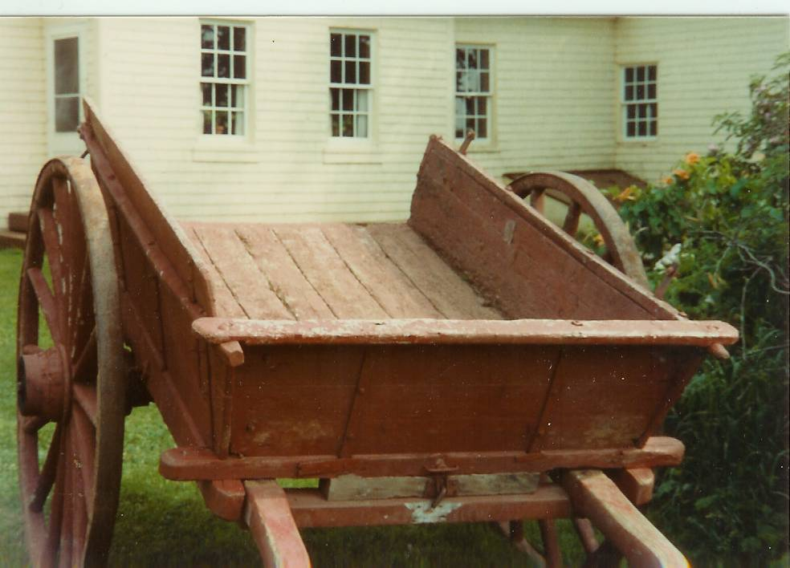
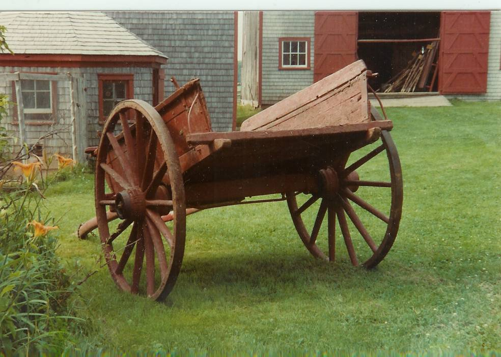

The Family Chronicle
No. 89 January 5, 2004
____________________________________________________________________


I have fond memories, but cannot tell you why, of the lowly dumpcart - the workhorse of a small farm. It was used for hauling gravel, banking, turnips, manure, firewood, etc, etc, etc. – and of course, people. As the name says, it was a cart that dumped; while loading was difficult, unloading was easy.
One sat at the front with one’s feet resting on a shaft along the side of the horse. The horse’s rump was only a few
inches from the cart box. A cart was a bit heavy to lift when hitching a horse but much easier to back up than a wagon. To unload, one simply undid a latch at the front and lifted; gravity did the rest. I especially remember using a dump cart when harvesting turnips (before we had a small truck). The horse walked between two rows of turnips, and the cart straddled them. One pulled a turnip, cleaned and topped it and threw it into the cart.
When the cart was full, one drove to the house. If the turnips were destined for the basement, they had to be unloaded one by one and dropped down the chute. If unloaded on the barn floor, the cart could simply be dumped.
Don Edge writes:
“Interestingly, the Bay du Vin is described as the "windy river," after the notion it is not named after wine, since no grapes grew there, and that the name comes from Baie des Ventes, Bay of Winds. However, a very early map (reproduced in Ganong) identifies the area as Baie des Ovines or Sheep Bay. I think this last is the more likely origin of what we call Bay du Vin.
Reading about the knitting reminded me that one winter in the one room schoolhouse in Upper Black River the entire school (about twelve of us) knitted for the troops. I was very young, so I was assigned writers. I remember receiving a letter from a soldier overseas who wrote that I was helping win the war. In was very proud of our knitting efforts.
I think I can remember many of my fellow students, including Joyce and Fraser MacKay, Vera and Marvin MacLean, Esther and Sybil Watling, Earl MacNaughton, Eldon, Hazel, and Ruby MacDonald, and my sister, Elspeth. I welcome additions and corrections.”
My sister, Lillian, recalled:
- She and Brydone paid $5.00 a month for an apartment and $10.00 per month for a three-bedroom house in Loggieville when first married (1939).
- Eggs were 10 cents per dozen, butter 15 cents per pound, fresh smelts were 2-4 cents per pound, sugar was 5 cents per pound and letters took a three-cent stamp.
- Bread poultices, or poultices of yellow soap and white sugar, were used to hold heat to a small infection, an onion was often placed on the ear when one had an ear ache, oats in a bag would be heated and applied to sore spots.
- One time a cyclone lifted the Upper Black River School and moved it across the road. (I remember seeing photos of damage to the school, presumably from that cyclone. – Ed.)
- Grandma Watling made yeast (for bread, not beer) from hops which grew at the end of our house
-George Godfrey’s barn was demolished by a cyclone about 1932
- On her way home one year Lillian stayed in a bed and breakfast in Maine for $1.50 for the night including breakfast.
- People gave their Eaton’s orders to the bus driver going to Moncton and picked up their orders from him on his return.
- Her train fare to Boston in 1933 was $11.11
- She paid $10.00 fare and $3.00 for a stateroom on a trip home by steamship from Boston to Saint John.
- Mum cored and sliced apples and dried them for the winter. (I remember strings of cored apples strung around an upstairs bedroom, the one next to the driveway – Ed.)
The Chronicle is an occasional newsletter published by Don Glendenning and posted on the family website3. It is intended to share information about my family, community and the times in which I grew up. While every effort is made to be accurate, errors are likely to occur. Comments, enquiries and information may be sent to 62 Queen Elizabeth Drive, Charlottetown, PEI, C1A 3A9. Tel:902 892 5859. Email: dglende@auracom.com Web: www.glendenning.net